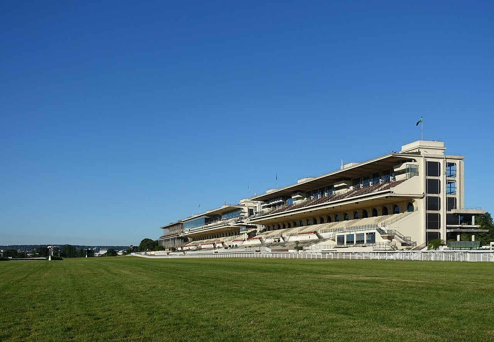

Kingland se exhibe en la recta de Auteuil y gana el Grand Prix d'Automne
El favorito no falló en el Prix Serge Landon (Gr. I): Kingland, tras una carrera de espera, fue claramente el más fuerte en la recta. Zarakhan fue segundo y Jet Blue, tercero.

CC BY 2.0
Kingland corrió el Prix Serge Landon - Grand Prix d'Automne, disputado el sábado 14 de noviembre en Auteuil, sin precipitarse. Hizo una carrera de espera, sin forzar, y en la línea recta marcó diferencias con claridad sobre sus rivales. Llegaba como gran favorito y respondió a las expectativas de quienes confiaron en él.
Zarakhan, que animó la carrera junto a otros, conservó con suficiencia la segunda plaza. Era su primera tentativa en un Grupo I y la resolvió con nota. Detrás entró Jet Blue, buen finalizador, que ya fue tercero en la Racing TV Grande Course de Haies d'Auteuil la primavera pasada y repitió puesto.
Thélème, ganador de la prueba en 2022 y 2023, parecía tener opciones de completar el podio durante buena parte del tramo final. Sin embargo, sufrió un doble ataque en los últimos metros y se quedó fuera de los tres primeros.
La victoria de Kingland tiene además un valor de regreso. Ganó hace dos años el Prix Renaud du Vivier, la Grande Course de Haies de los 4 años, y ahora demuestra que una larga interrupción de carrera no ha mermado su potencial. Sucede en el palmarés a Losange Bleu, que se impuso en las ediciones de 2024 y 2025.
Su entrenador, François Nicolle, lo situó por encima del resto tras la carrera: «Il est au-dessus de la mêlée. Cheltenham, c'est dans les tuyaux». Es decir, Cheltenham está en los planes.
Por Martín Larrañeta